word only
outrageword only
overwhelmedpanicCC BY-SA 2.0 · John · source
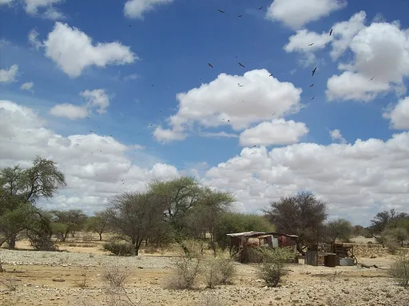
paranoiaCC BY-SA 3.0 · Alexander Wunschik · source
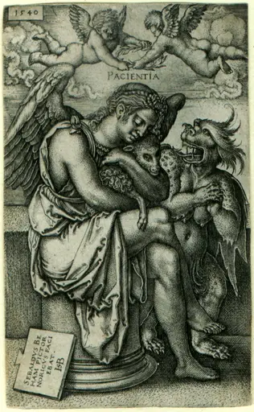
patiencePublic domain · Hans Sebald Beham · source
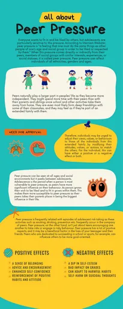
peer-pressureCC BY-SA 4.0 · Ataberk Coşkun · source
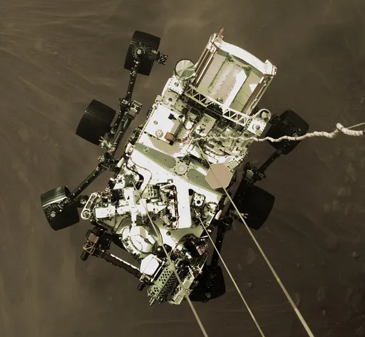
perseverancePublic domain · NASA · source
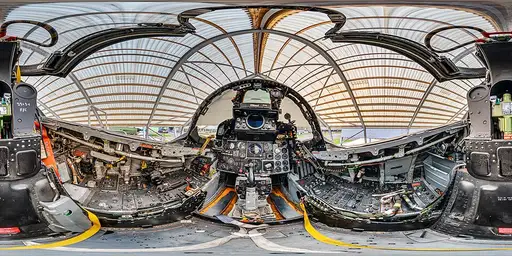
phantomCC BY-SA 4.0 · Lauri Veerde · source
photogenicCC BY 2.0 · Frank Kovalchek from Anchorage, Alaska, USA · source
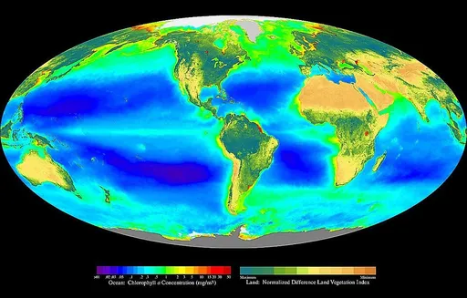
photosynthesisPublic domain · Provided by the SeaWiFS Project, Goddard Space Flight Center and ORBIMAGE · source
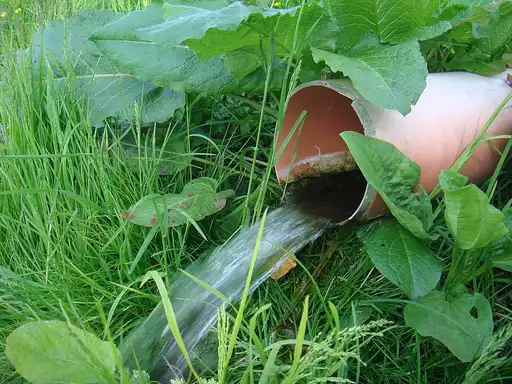
pollutionCC0 · SpartanDav · source
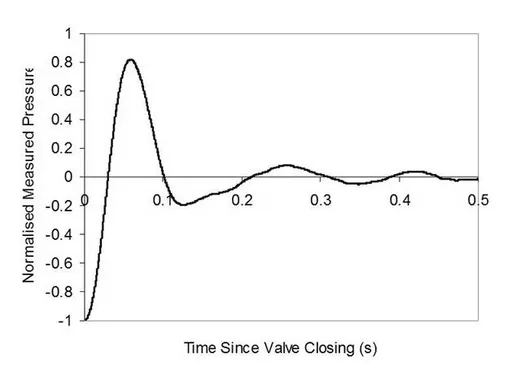
pressurePublic domain · Donebythesecondlaw (talk) · source
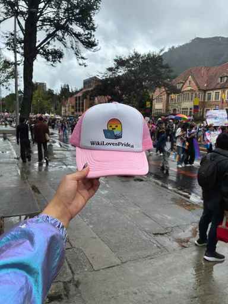
prideCC BY-SA 4.0 · Daniela Moreno (WMCO) · source
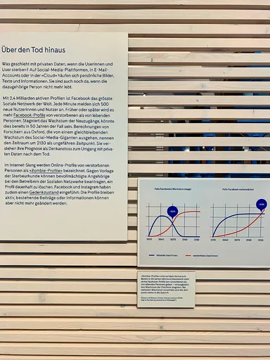
privacyCC BY-SA 4.0 · Ank Kumar · source

procrastinationCC0 · MismibaTinasheMadando · source
word only
quagmireword only
quicksandword only
quiet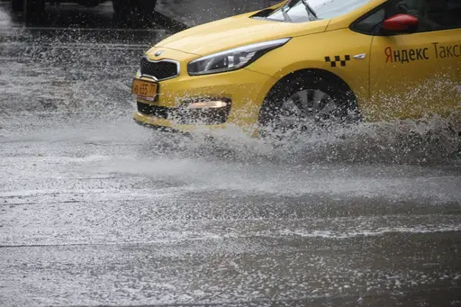
rainstormCC BY 2.0 · Andrey Filippov 安德烈 from Moscow, Russia · source
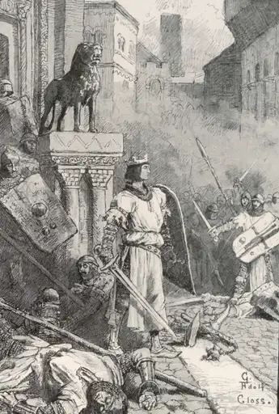
rebellionPublic domain · Gustav Adolf Closs · source